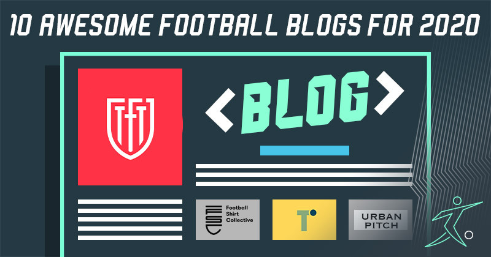

BLOG 1
Football fans really are spoilt for choice. The amount of awesome content out there.


Neymar da Silva Santos Júnior, known as Neymar, is a Brazilian professional footballer who plays as a forward for Ligue 1 club Paris Saint-Germain and the Brazil national team. He is widely regarded as one of the best players in the world.

Lionel Andrés Messi is an Argentine professional footballer who plays as a forward or an attacking midfielder and captains the Argentina national team. He is currently a free agent, having played all his professional career for La Liga club FC Barcelona, whom he captained from 2018 to 2021.

Cristiano Ronaldo dos Santos Aveiro GOIH ComM is a Portuguese professional footballer who plays as a forward for Serie A club Juventus and captains the Portugal national team.

Paulo Exequiel Dybala (born 15 November 1993) is an Argentine professional footballer who plays as a forward for Serie A club Juventus and the Argentina national team.

Mesut Özil is a German professional footballer who plays as an attacking midfielder for Süper Lig club Fenerbahçe. Nicknamed "The Assist King", Özil is known for his technical skills, creativity, agility, and finesse. He has also played as a wide midfielder in his career.

Mauro Emanuel Icardi is an Argentine professional footballer who plays as a striker for Ligue 1 club Paris Saint-Germain and the Argentina national team.

Ángel Fabián Di María is an Argentine professional footballer who plays for Ligue 1 club Paris Saint-Germain and the Argentina national team. He can play as either a winger or attacking midfielder.

Kylian Mbappé Lottin is a French professional footballer who plays as a forward for Ligue 1 club Paris Saint-Germain and the France national team. Mbappé began his senior career with Ligue 1 club Monaco, making his professional debut in 2015, aged 16.

Mohamed Salah Hamed Mahrous Ghaly is an Egyptian professional footballer who plays as a forward for Premier League club Liverpool and captains the Egypt national team. Considered one of the best players in the world, he is known for his finishing, dribbling, and speed.

Harry Edward Kane MBE is an English professional footballer who plays as a striker for Premier League club Tottenham Hotspur and captains the England national team. Regarded as one of the best strikers in the world, Kane is known for his prolific goalscoring record and ability to link play.

Kevin De Bruyne is a Belgian professional footballer who plays as a midfielder for Premier League club Manchester City, where he is vice-captain, and the Belgium national team.

Philippe Coutinho Correia is a Brazilian professional footballer who plays as an attacking midfielder or winger for Spanish club Barcelona and the Brazil national team. He is known for his combination of vision, passing, dribbling and ability to conjure curving long-range strikes
Football fans really are spoilt for choice. The amount of awesome content out there.
Football fans really are spoilt for choice. The amount of awesome content out there.